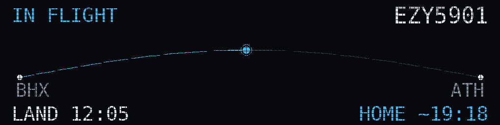
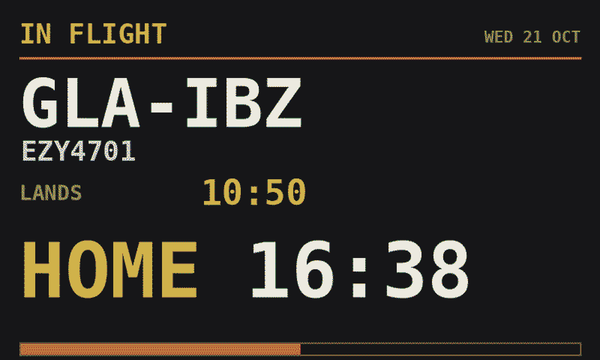

Ident is software — you source the hardware yourself. Start with how much you want to build, then pick the parts. Every supported option is here, and so are the combinations that will waste your money.
Pick by how much you want to do yourself.
Seeed Studio's reTerminal: screen, battery, case and stand in one box. Nothing to assemble — you install Ident from a computer with a USB-C cable. Runs on battery power, charged over USB-C. In testing; not on sale yet. The two models · Compared with a Pi
A Raspberry Pi and a Pimoroni e-paper panel, or an LED departure board. A little assembly, no soldering, and every style and feature Ident has today. Designed to be plugged in; it can run on a battery if you add one. The reference build
Ident as a web page: the board full-screen on an iPad you already own, with nothing to buy. Load your roster from its calendar file and it's read on the iPad itself. Works on iPads back to iOS 10.3. In testing; not on sale yet.
The differences that matter, feature by feature. “Coming” means being written for the reTerminal now. Correct as of 10 October 2026.
| Feature | Raspberry Pi build | reTerminal |
|---|---|---|
| Always on: changes the moment the roster does | ✓ | ✗ Checks every 20 minutes while you’re working, hourly otherwise, at once on a button press |
| Runs for weeks on its own battery | ✗ Plugged in; an add-on battery lasts days | ✓ Built in, charged over USB-C |
| Nothing to assemble | ✗ | ✓ |
| Case and stand included | ✗ | ✓ |
| No SD card to wear out | ✗ | ✓ |
| Your roster stays in your house | ✓ | ✓ |
| Private codes hidden by default | ✓ | ✓ |
| Colour screen | ✓ | ✓ E1002; the E1001 is black and white |
| Choice of screen size | ✓ 4.0″, 7.3″, 13.3″ | ✗ 7.3″ or 7.5″ |
| LED departure-board panels | ✓ | ✗ |
| All 14 display styles | ✓ | Coming Six written and tested: Solari (in all three colours), boarding pass, flight strips, chart, minimal and 24-hour dial. The other eight to follow |
| Scan-to-track QR code | ✓ | Coming |
| Live flight tracking | ✓ | Coming |
| Airport weather | ✓ | Coming |
| Day-off photographs | ✓ | Coming |
| Settings from your phone at any time | ✓ | ✗ Hold a button for its setup page; it sleeps the rest of the time |
| PDF roster upload | ✓ | ✗ Calendar link only |
| Updates itself | ✓ | Coming |
Seeed Studio's reTerminal E series is a finished e-paper display with its own small computer, battery and Wi-Fi. Ident is being written for both models below — same board, different screen — and reads your roster on the display itself, as it does on a Pi. It is in testing and not on sale yet; buy one now only if you are joining the test.
| Model | Screen | Price | Battery | Redraw |
|---|---|---|---|---|
| E1002 (colour) | 7.3″ colour e-paper (E Ink Spectra 6), 800×480 | £100.62 at RobotShop UK, including VAT — made to order, no change-of-mind returns. Or US$99 direct from Seeed, shipped from China, with import VAT and a handling fee to pay on delivery. | 2000 mAh. Seeed quote up to 3 months | 15–30 seconds |
| E1001 (black & white) | 7.5″ black-and-white e-paper, 800×480 | £79.99 at Smart Home Shop UK, including VAT. Or US$73.99 direct from Seeed, with import charges as above. | 2000 mAh. Seeed quote up to 3 months | 2–5 seconds |
Prices checked 26 September 2026. The E1002 was out of stock at Smart Home Shop UK (£116.99) and RS (£125.86) that day.
If you don't want to think about it, buy these four things. This is the combination the software is developed and tested against.
| Part | Which one | Indicative |
|---|---|---|
| Display | Pimoroni Inky Impression 7.3″ (2025 Edition) — 800×480, Spectra 6 | £79.50 |
| Computer | Raspberry Pi 3 Model A+ — header already fitted, and
dual-band Wi-Fi, so no 2.4GHz-only problem The Pi Zero 2 WH (£17.30, header fitted) is smaller and draws less power, so it is the first choice whenever it is in stock — at the time of writing it is sold out almost everywhere. If the 3 Model A+ is sold out too, a Pi 4 (1GB) is the fallback; see Computers below. | £24.00 |
| Power supply | Official 12.5W micro-USB supply, UK plug | £7.70 |
| microSD card | Any branded 16–32GB card, ideally A1-rated
(example, though
twin packs elsewhere are usually far better value). Ident and the operating
system together use under 4GB — a bigger card buys longer life, not more room.
"A1" is the rating that matters: it promises small random reads and writes, which is what running an OS is. "Class 10" and "U1" only describe video recording speed. | ~£15 |
| Total | ~£126 |
The Raspberry Pi build is designed to be plugged in, and that is what we recommend. If you'd rather it had no cable, it can run on a battery too — or choose the reTerminal, which is built to. E-paper keeps its picture with no power at all, so Ident can live on a battery: it wakes, updates the wall, and switches itself off until the next check. Checks come every 20 minutes while you're rostered to work and once an hour otherwise, and you choose the times in the control panel's Power card. Add one of these to the reference build — they fit underneath the Pi and leave the display's connector free.
| Part | Which one | Indicative |
|---|---|---|
| Battery for a Pi Zero 2 W | PiSugar 3, 1200 mAh, with the clock that switches the Pi back on | £39.99 |
| Battery for a Pi 3 A+ | PiSugar 3 Plus, 5000 mAh — the bigger cell, and the longer life | US$49.99 |
| Charging | Any USB-C phone charger. It charges in place, and keeps running while it does. | — |
Why not a Witty Pi? It sits on the same pins as the display and shares one of them, and on a Pi Zero 2 W the display can stop updating. The PiSugar boards clip on underneath instead.
The other supported build. Brighter, livelier, and it looks like the board at the gate — but it glows, it needs its own power supply, and it is more of a project. Mains only; there is no battery version of an LED panel.

| Part | Which one | Indicative |
|---|---|---|
| Panels | 2 × 64×32 HUB75 panels, chained to 128×32 — the size the layouts are drawn for | ~£50 |
| Driver | Adafruit RGB Matrix Bonnet, or the Matrix HAT + RTC when the bonnet is out of stock | £14.40 |
| Panel supply | 5V 4A supply — separate from the Pi's, straight into the bonnet | ~£12 |
| Computer | Raspberry Pi 3 Model A+, plus its own 12.5W micro-USB supply and a microSD card | ~£40 |
| Total | ~£116 |
All are Pimoroni Inky Impression panels and all are supported. Layouts adapt to whichever you choose.

Drawn by Ident's own software from a sample roster.
| Panel | Resolution | Colours | Verdict |
|---|---|---|---|
| 7.3″ (2025) · Pimoroni | 800×480 | 6 (Spectra) | Recommended. Best balance of size, price and legibility. |
| 4.0″ · Pimoroni | 600×400 | 6 (Spectra) | Cheapest entry. Fine on a desk; small for a wall. |
| 13.3″ · Pimoroni | 1600×1200 | 6 (Spectra) | Superb but expensive, and noticeably slower to redraw. |
| 5.7″ | 600×448 | 7 (ACeP) | Discontinued. Supported if you own one; don't hunt for it. |
Ident supports three Raspberry Pis, listed in order of preference. Stock comes and goes — if your first choice is sold out, buy the next one down. The Wi-Fi band is the thing that catches people out.
| Board | 2.4GHz | 5GHz | Power connector | Notes |
|---|---|---|---|---|
| 1. Zero 2 WH | Yes | No | micro-USB | £17.30. First choice. Smallest, lowest power draw, header pre-fitted. Choose the “with header” option — the plain Zero 2 W has nothing to plug the display into. |
| Zero 2 W | Yes | No | micro-USB | £14.40. Only if the WH is sold out and this isn't. It has no header, so add a solderless press-fit header (£7.20 with its fitting jig). No soldering. |
| 2. Pi 3 Model A+ | Yes | Yes | micro-USB | £24.00. Second choice, and the reference build. Same chip family and software as the Zero 2 W, twice the footprint, header fitted, dual-band. |
| 3. Pi 4 Model B (1GB) | Yes | Yes | USB-C 3A | £33.60. Third choice. Bigger and warmer; 1GB is plenty — don't pay for more. Needs a USB-C supply, not the micro-USB one. Not yet confirmed with the LED board. |
Every one of these has cost somebody an evening.
There's nothing to plug the display into. Buy the “WH” version, which has the header already fitted — or, if only the plain board is in stock, add a solderless press-fit header. This is the single most common ordering mistake.
The Zero's radio is 2.4GHz only. If your router broadcasts one network name and steers devices to 5GHz, or 2.4GHz is switched off, it will never connect and no amount of configuration will fix it. Enable 2.4GHz, split the band names, or buy a dual-band Pi.
Wrong connector entirely — these need USB-C. A Pi 5 also needs a 5A/27W supply; feed it less and it will brown out mid-refresh and corrupt the SD card. Buy the supply that matches the board.
The panel sits on the GPIO header, so almost no standard case will close with it attached. Plan on a frame or open mount instead of a case.
The Inky uses the GPIO header, SPI and I2C. Stacking a second HAT will usually conflict. Run one HAT only.
Pimoroni warn that fixings with longer threads than the supplied ones can crack the glass. Use what comes in the box.
Technically compatible, but the GPIO header points backwards out of the keyboard, so the panel ends up at an absurd angle. You'd need a GPIO extension cable.
The cheap route to 5GHz on a Zero 2 W: a Linux-compatible dual-band adapter plus a micro-USB OTG adapter. Fiddlier, and driver support varies — check before buying.
The 7.3″ panel fits IKEA's RÖDALM frame, black, 13×18cm (£3). Otherwise any deep-rebate photo frame or a 3D-printed stand — the panel is about 170×110mm, so leave room behind for the Pi and the cable.
A reader is needed once, to flash the card — and again if you ever need to recover a device that won't join Wi-Fi. Worth owning.